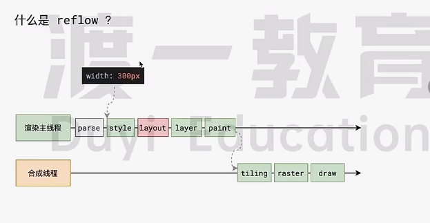

渡一教育大师课
事件循环
浏览器的进程模型
何为进程？
程序运行需要有它自己专属的内存空间，可以把这块内存简单地理解为进程。
每个应用至少有一个进程，进程之间相互独立 ，即使要通信，也要双方同意。

何为线程？
有了进程后，就可以运行程序的代码了。
运行代码的人 称为线程
一个进程至少有一个线程，所以在进程开启后会自动创建一个线程来运行代码。该线程称之为主线程 .(主线程结束意味着整个进程结束)
如果程序需要同时执行多块代码，主线程就会启动更多的线程来执行代码，所以一个进程中可以包含多个线程。

浏览器有哪些进程和线程？
浏览器是一个多进程多线程的应用程序
浏览器内部工作及其复杂。
为了避免相互影响，减少连环崩溃的几率，当启动浏览器后，它会自动启动多个进程。

可以在浏览器的任务管理器中产看当前所有进程
其中，最主要的进程有：
-
浏览器进程
主要负责界面显示、用户交互、子进程管理等。浏览器进程内部会启动多个线程处理不同的任务。 -
网络进程
负责加载网络资源。网络进程内部会启动多个线程来处理不同的网络任务。
-
渲染进程(重点)
渲染进程启动后，会开启一个渲染主线程，主线程负责执行HTML,CSS,JS代码。
默认情况下，浏览器会为每个标签页开启一个新的渲染进程，以保证不同的标签页之间不相互影响。
将来该默认模式可能会有所改变，有兴趣的同学可以参见chrome官方文档
渲染主线程是如何工作的？
渲染主线程是浏览器中最繁忙的线程，需要它处理的任务包括但不限于：
- 解析HTML
- 解析CSS
- 计算样式
- 布局
- 处理图层
- 每秒把页面画60次
- 执行全局JS代码
- 执行事件处理函数
- 执行计时器的回调函数
- ……
思考题：为什么渲染线程不适用于多个线程来处理这些事情(工作两三年后思考)
要处理这么多任务，主线程遇到了一个前所未有的难题：如何调度任务？
比如：
- 我正在执行一个JS函数，执行到一半的时候用户点击了按钮，我该立即去执行点击事件的处理函数吗？
- 我正在执行一个JS函数，执行到一半的时候某个计时器到达了时间，我该立即去执行它的回调吗?
- 浏览器进程通知我“用户点击了按钮”，与此同时，某个计时器也到达了时间，我应该处理哪一个呢？
- ……
渲染主线程想出了一个绝妙的主意来处理这个问题：排队

- 在最开始的时候，渲染主线程会进入一个无限循环
- 每一次循环会检查消息队列中是否有任务存在。如果有，就取出第一个任务执行，执行完一个后进入下一次循环；如果没有，则进入休眠状态。
- 其他所有线程(包括其他进程的线程)可以随时向消息队列添加任务。新任务会加到消息队列的末尾。在添加新任务时，如果主线程是休眠状态，则会将其唤醒以继续循环拿取任务。
这样一来，就可以让每个任务有条不紊，持续的进行下去了。
整个过程，被称之为事件循环(消息循环)
若干解释
何为异步
代码在执行过程中，会遇到一些无法立即处理的任务，比如：
- 计时完成后需要执行的任务 — setTimeout,
- 网络通信完成后需要执行的任务—XHR,
- 用户操作后需要执行的任务 — addEventListener
如果让渲染主线程等待这些任务的时机达到，就会导致主线程长期处于阻塞 的状态，从而导致浏览器卡死green

渲染主线线程承担着极其重要的工作，无论如何不能阻塞
因此，浏览器选择异步来解决这个问题

使用异步的方式，渲染主线程永不阻塞
面试题：如何理解JS的异步？
参考答案：
JS是一门单线程的语言，这是因为它运行在浏览器的渲染主线程中，而渲染主线程只有一个。
而渲染主线程承担着诸多工作，渲染页面，执行JS都在其中运行。
如果使用同步的方式，就极有可能导致主线程产生阻塞，从而导致消息队列中的很多其他任务无法得到执行。
这样一来，一方面会导致繁忙的主线程白白地消耗时间，另一方面导致页面无法及时更新，给用户造成卡死现象。
所以浏览器采用异步的方式来避免。具体的做法是当某些任务发生时，比如计时器，网络，事件监听，主线程将任务交给其他线程去处理，自身立即结束任务的执行，转而执行后续代码。当其他线程完成时，将事先传递的回调函数包装成任务，加入到消息队列的末尾排队，等待主线程调度执行。
在这种异步模式下，浏览器永不阻塞，从而最大限度的保证了单线程的流畅运行。
JS为何会阻塞渲染
先看代码
1 |
|

JS的执行和渲染都在渲染主线程上
任务有优先级吗
任务没有优先级,在消息队列中先进先出
但消息队列是有优先级的:
根据 W3C 的最新解释:
- 每个任务都有一个任务类型,同一个类型的任务必须在一个队列,不同类型的任务可以分属不同的队列.在一次事件循环中,浏览器可以根据实际情况从不同的队列中取出任务执行.
- 浏览器必须准备好一个微队列,微队列中的任务优先于所有其他任务执行
随着浏览器的复杂度急剧提升,W3C不再使用宏队列的说法
在目前chrome的实现中,至少包含了下面的队列:
- 延时排队: 用于存放计时器到达后的回调任务,优先级中
- 交互队列:用于存放用户操作后产生的时间处理任务,优先级高
- 微队列: 用户存放需要最快执行的任务,优先级最高
添加任务到微队列的主要方式是使用,Promise,MutationObserver
例如
2
>Promise.resolve().then(函数)
例题：
1 | setTimeout(function(){ |
浏览器还有很多其他的队列,由于和我们开发关系不大,不做考虑
面试题:阐述一下JS的事件循环
参考答案:
事件循环又叫做消息循环,是浏览器渲染主线程的工作方式.
在Chrome的源码中,它开启一个不会结束的for循环,每次循环从消息队列中取出第一个任务执行,而其他线程只需要在合适的时候将任务加入到队列末尾即可.
过去把消息队列简单分为宏队列和微队列,这种说法目前已经无法满足复杂的浏览器环境,取而代之的是一种更加多变灵活的处理方式.
根据W3C官方的解释,每个任务有不同的类型,同类型的任务必须在同一个队列,不同的任务可以属于不同的队列.不同任务队列有不同的优先级,在一次事件循环中,由浏览器自行决定取哪一个队列的任务.但浏览器必须有一个微队列,微队列的任务一定具有最高的优先级,必须优先调度执行.
面试题:JS中的计时器能做到精确计时吗?为什么?
参考答案:
- 计算机硬件没有原子钟,无法做到精确计时.
- 操作系统的计时函数本身就有少量偏差,由于JS的计时器最终调用的是操作系统的函数,也就携带了这些偏差
- 按照W3C标准,浏览器实现计时器时,如果嵌套超过5层,则会带有4毫秒的最少时间,这样在计时时间少于4毫秒时又带来了偏差
- 受事件循环的影响,计时器的回调函数只能在主线程空闲时运行,因此又带来了偏差
总结:
- 单线程是异步产生的原因
- 事件循环是异步的实现方式
浏览器的渲染原理
什么是渲染
渲染(render):把html字符串转换为页面的像素信息
1 | function render(html){ |

浏览器是如何渲染页面的?
当浏览器的网络线程收到HTML文档后,会产生一个渲染任务,并将其传递给渲染主线程的消息队列.
在事件循环机制的作用下,渲染主线程取出消息队列中的渲染任务,开启渲染流程.

整个渲染流程分为多个阶段,分别是:HTML解析,样式计算,布局,分层,绘制,分块,光栅化,画
每个阶段都有明确的输入输出,上一个阶段的输出会称为下一个阶段的输入.
这样,整个渲染流程就形成了一套组织严密的生产流水线.

渲染的第一步是 解析HTML(Parse)
解析过程中遇到CSS解析CSS,遇到JS执行JS.为了提高解析效率,浏览器在开启解析前,会启动一个预解析的线程,率先下载HTML中的外部CSS文件和外部的JS文件．

如果主线程解析到link位置,此时外部的CSS文件还没有下载解析好,主线程不会等待,继续解析后续的HTML.这是因为下载和解析CSS的工作是在预解析线程中进行的.这就是CSS不会阻塞HTML解析的根本原因．

如果主线程解析到script位置，会停止解析HTML，转而等待JS文件下载好，并将全局代码解析执行完成后，才能继续解析HTML。这是因为JS代码的执行过程可能会修改当前的DOM树，所以DOM树的生成必须暂停。这就是JS会阻塞HTML解析的根本原因。

第一步完成后，会得到DOM树和CSSOM树，浏览器的默认样式，内部样式，外部样式，行内样式均会包含在CSSOM树中。


渲染的第二步是 样式计算(style)
- CSS属性值的计算过程
- 层叠
- 继承
- 视觉格式化模型
- 盒模型
- 包含块
主线程会遍历得到的DOM树，依次为树中的每个节点计算出它最终的样式，称之为Computed Style.
在这一过程中，很多预设值会变成绝对值，比如red会变成rgb(255,0,0),相对单位会变成绝对单位，比如em会变成px
这一步完成后，会得到一棵带有样式的的DOM树。
渲染的第三步是布局(layout)，布局完成后会得到布局树。

布局阶段会依次遍历DOM树的每一个节点，计算每个节点的几何信息。例如节点的宽高，相对包含块的位置。
大部分时候，DOM树和布局树并非一一对应 .
比如display:none的节点没有几何信息，因此不会生成到布局树；又比如使用了伪类选择器，虽然DOM树中不存在这些伪元素节点，但它们拥有几何信息，所以会生成到布局树中。还有匿名行盒，匿名块盒等等都会导致DOM树和布局树无法一一对应。

渲染的第四步是分层(layer)

主线程会使用一套复杂的策略对整个布局树中进行分层。
分层的好处在于，将来某一个层改变后,仅会对该层进行后续处理，从而提升效率。
滚动条，堆叠上下文，transform,opacity等样式都会或多或少的影响分层结果，也可以通过will-change属性更大程度的影响分层结果。
渲染的第五步是 绘制(Paint)
主线程会为每个层单独产生绘制指令集，用于描述这一层的内容该如何画出来。


渲染的第六步是 分块(Tiling)
完成绘制后，主线程将每个图层的绘制信息提交给合成线程，剩余工作将由合成线程完成。
合成线程首先对每个图层进行分块，将其划分为更多的小区域。

它会从线程池中拿取多个线程来完成分块工作。

渲染的第六步是 光栅化(Raster)
合成线程会将块信息交给GPU进程，以极高的速度完成光栅化。
GPU进程会开启多个线程来完成光栅化，并且优先处理靠近视口区域的块 。
光栅化的结果，就是一块一块的位图。


渲染的第七步是 画(Draw)
合成线程拿到每个层，每个块的位图后，生成一个个指引(quad) 信息。

指引会标识出每个位图应该画到屏幕的哪个位置，以及会考虑到旋转，缩放等变形。
变形发生在合成线程，与渲染主线程无关，这就是transform效率高的本质原因
合成线程会把quad提交给GPU进程，由GPU进程产生系统调用，提交给GPU硬件，完成最终的屏幕成像。
总结

面试题
什么是reflow?

reflow的本质就是重新计算layout树
当进行了会影响布局树的操作后，需要重新计算布局树，会引发layout
为了避免连续的多次操作会导致布局树的反复计算，浏览器会合并这些操作，当JS代码全部完成后再进行统一计算。所以，改动属性造成的reflow是异步完成的。
也同样因为如此，当JS获取布局属性时，就可能造成无法获取到最新的布局信息。
浏览器在反复权衡下，最终决定获取属性立即reflow
什么时repaint
repaint的本质就是重新根据分层信息计算了绘制指令。
当改动了可见样式后，就需要重新计算，会引发repaint.
由于元素的布局信息也属于可见样式，所以reflow一定会引起repaint.
为什么transform的效率高
因为transform既不会影响布局也不会影响绘制指令，它影响的只是渲染流程的最后一个draw 阶段。
由于draw阶段在合成线程中，所以transform的变化几乎不会影响渲染主线程。反之，渲染主线程无论如何忙碌，也不会影响transform的变化。
框架-Vue从入门到手撕
1 | <div class='container'>{{title}}</div> |
1 | var vm = new Vue({ |
数据响应式
数据的变化会引发页面的变化.
 wechat
wechat alipay
alipay